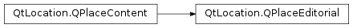

QPlaceEditorial¶
Synopsis¶
Detailed Description¶
The
PySide2.QtLocation.QPlaceEditorialclass represents a publisher’s article describing a place.Each
PySide2.QtLocation.QPlaceEditorialhas a title, text and language; in addition to those properties inherited fromPySide2.QtLocation.QPlaceContent.Note: The Places API only supports editorials as ‘retrieve-only’ objects. Submitting editorials to a provider is not a supported use case.
See also
-
class
PySide2.QtLocation.QPlaceEditorial¶ -
class
PySide2.QtLocation.QPlaceEditorial(other) Parameters: other – PySide2.QtLocation.QPlaceContentConstructs a new editorial object.
Constructs a copy of
otherif possible, otherwise constructs a default editorial object.
-
PySide2.QtLocation.QPlaceEditorial.language()¶ Return type: unicode Returns the language of the editorial. Typically this would be a language code in the 2 letter ISO 639-1 format.
-
PySide2.QtLocation.QPlaceEditorial.setLanguage(data)¶ Parameters: data – unicode Sets the
languageof the editorial. Typically this would be a language code in the 2 letter ISO 639-1 format.
-
PySide2.QtLocation.QPlaceEditorial.setText(text)¶ Parameters: text – unicode Sets the
textof the editorial.
-
PySide2.QtLocation.QPlaceEditorial.setTitle(data)¶ Parameters: data – unicode Sets the
titleof the editorial.
-
PySide2.QtLocation.QPlaceEditorial.text()¶ Return type: unicode Returns a textual description of the place.
Depending upon the provider, the editorial text could be either rich(HTML based) text or plain text.
-
PySide2.QtLocation.QPlaceEditorial.title()¶ Return type: unicode Returns the title of the editorial.
© 2018 The Qt Company Ltd. Documentation contributions included herein are the copyrights of their respective owners. The documentation provided herein is licensed under the terms of the GNU Free Documentation License version 1.3 as published by the Free Software Foundation. Qt and respective logos are trademarks of The Qt Company Ltd. in Finland and/or other countries worldwide. All other trademarks are property of their respective owners.